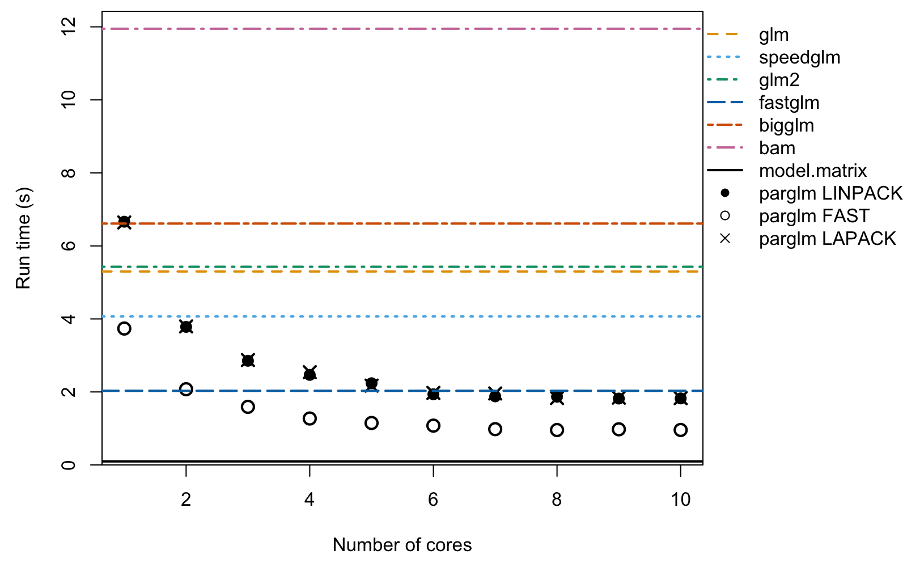
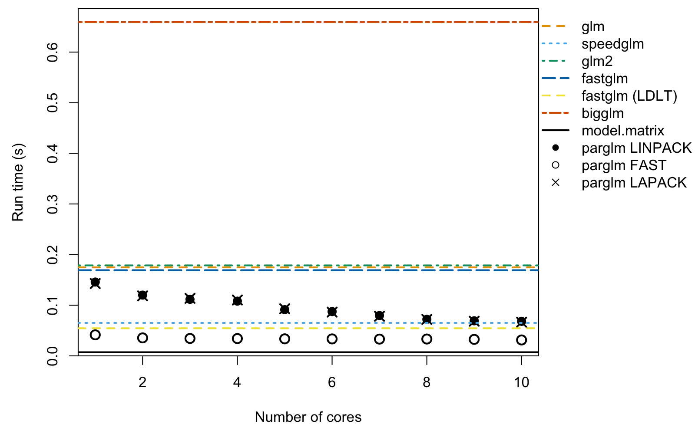
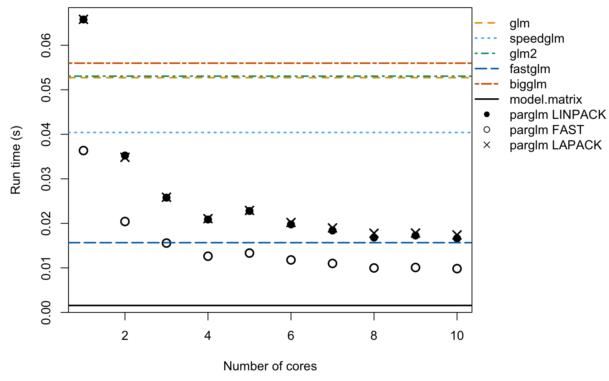
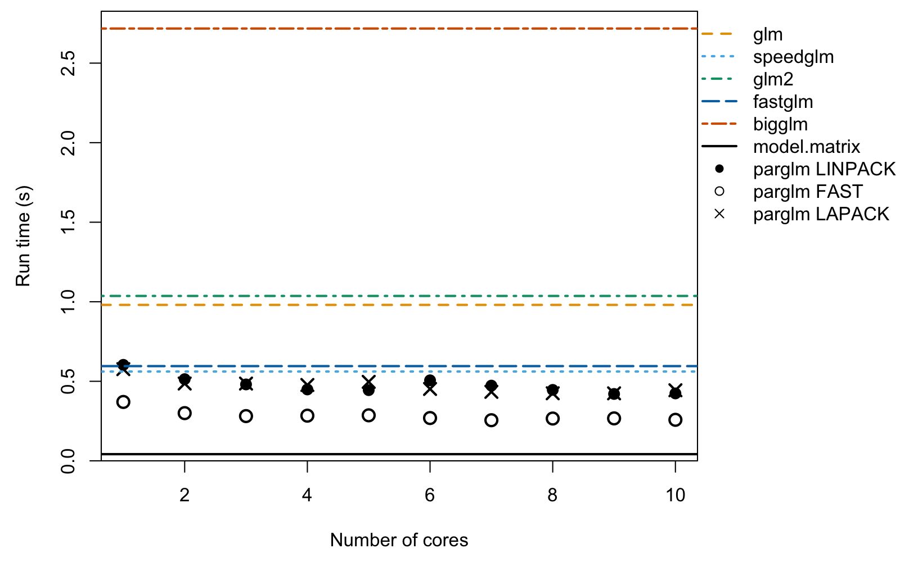

Introduction to the parglm package
Benjamin Christoffersen and Tom Palmer
2026-05-04
Source:vignettes/parglm.Rmd
parglm.RmdThe motivation for the parglm package is a parallel
version of the glm function. It solves the iteratively
re-weighted least squares using a QR decomposition with column pivoting
with DGEQP3 function from LAPACK. The computation is done
in parallel as in the bam function in the mgcv
package. The cost is an additional \(O(Mp^2 +
p^3)\) where \(p\) is the number
of coefficients and \(M\) is the number
chunks to be computed in parallel. The advantage is that you do not need
to compile the package with an optimized BLAS or LAPACK which supports
multithreading. The package also includes a method that computes the
Fisher information and then solves the normal equation as in the
speedglm package. This is faster but less numerically
stable.
Example of computation time
Below, we estimate a logistic regression with 1000000 observations
and 50 covariates. We vary the number of cores being used with the
nthreads argument to parglm.control. The
method argument sets which method is used.
LINPACK uses the same pivoted QR (dqrdc2) as
glm.fit for the final decomposition; LAPACK
uses DGEQP3 from LAPACK throughout; and FAST
solves the normal equations from the Fisher information, similar to the
speedglm package.
#####
# simulate
n # number of observations
#> [1] 1000000
p # number of covariates
#> [1] 50
set.seed(68024947)
X <- matrix(rnorm(n * p, 1/p, 1/sqrt(p)), n, ncol = p)
df <- data.frame(y = 1/(1 + exp(-(rowSums(X) - 1))) > runif(n), X)
#####
# compute and measure time. Setup call to make
library(microbenchmark)
library(speedglm)
library(fastglm)
library(glm2)
library(biglm)
library(mgcv)
library(parglm)
X_mat <- model.matrix(y ~ ., df)
biglm_form <- reformulate(names(df)[-1], response = "y")
bam_form <- biglm_form
cl <- list(
quote(microbenchmark),
glm = quote(glm (y ~ ., binomial(), df)),
speedglm = quote(speedglm(y ~ ., family = binomial(), data = df)),
glm2 = quote(glm2 (y ~ ., binomial(), df)),
fastglm = quote(fastglm (X_mat, as.numeric(df$y), family = binomial())),
bigglm = quote(bigglm (biglm_form, df, family = binomial())),
bam = quote(bam (bam_form, family = binomial(), data = df)),
times = 11L)
tfunc <- function(method = "LINPACK", nthreads)
parglm(y ~ ., binomial(), df, control = parglm.control(method = method,
nthreads = nthreads))
cl <- c(
cl, lapply(1:n_threads, function(i) bquote(tfunc(nthreads = .(i)))))
names(cl)[9:(9L + n_threads - 1L)] <- paste0("parglm-LINPACK-", 1:n_threads)
cl <- c(
cl, lapply(1:n_threads, function(i) bquote(tfunc(
nthreads = .(i), method = "FAST"))))
names(cl)[(9L + n_threads):(9L + 2L * n_threads - 1L)] <-
paste0("parglm-FAST-", 1:n_threads)
cl <- c(
cl, lapply(1:n_threads, function(i) bquote(tfunc(
nthreads = .(i), method = "LAPACK"))))
names(cl)[(9L + 2L * n_threads):(9L + 3L * n_threads - 1L)] <-
paste0("parglm-LAPACK-", 1:n_threads)
cl <- as.call(cl)
cl # the call we make
#> microbenchmark(glm = glm(y ~ ., binomial(), df), speedglm = speedglm(y ~
#> ., family = binomial(), data = df), glm2 = glm2(y ~ ., binomial(),
#> df), fastglm = fastglm(X_mat, as.numeric(df$y), family = binomial()),
#> bigglm = bigglm(biglm_form, df, family = binomial()), bam = bam(bam_form,
#> family = binomial(), data = df), times = 11L, `parglm-LINPACK-1` = tfunc(nthreads = 1L),
#> `parglm-LINPACK-2` = tfunc(nthreads = 2L), `parglm-LINPACK-3` = tfunc(nthreads = 3L),
#> `parglm-LINPACK-4` = tfunc(nthreads = 4L), `parglm-LINPACK-5` = tfunc(nthreads = 5L),
#> `parglm-LINPACK-6` = tfunc(nthreads = 6L), `parglm-LINPACK-7` = tfunc(nthreads = 7L),
#> `parglm-LINPACK-8` = tfunc(nthreads = 8L), `parglm-LINPACK-9` = tfunc(nthreads = 9L),
#> `parglm-LINPACK-10` = tfunc(nthreads = 10L), `parglm-FAST-1` = tfunc(nthreads = 1L,
#> method = "FAST"), `parglm-FAST-2` = tfunc(nthreads = 2L,
#> method = "FAST"), `parglm-FAST-3` = tfunc(nthreads = 3L,
#> method = "FAST"), `parglm-FAST-4` = tfunc(nthreads = 4L,
#> method = "FAST"), `parglm-FAST-5` = tfunc(nthreads = 5L,
#> method = "FAST"), `parglm-FAST-6` = tfunc(nthreads = 6L,
#> method = "FAST"), `parglm-FAST-7` = tfunc(nthreads = 7L,
#> method = "FAST"), `parglm-FAST-8` = tfunc(nthreads = 8L,
#> method = "FAST"), `parglm-FAST-9` = tfunc(nthreads = 9L,
#> method = "FAST"), `parglm-FAST-10` = tfunc(nthreads = 10L,
#> method = "FAST"), `parglm-LAPACK-1` = tfunc(nthreads = 1L,
#> method = "LAPACK"), `parglm-LAPACK-2` = tfunc(nthreads = 2L,
#> method = "LAPACK"), `parglm-LAPACK-3` = tfunc(nthreads = 3L,
#> method = "LAPACK"), `parglm-LAPACK-4` = tfunc(nthreads = 4L,
#> method = "LAPACK"), `parglm-LAPACK-5` = tfunc(nthreads = 5L,
#> method = "LAPACK"), `parglm-LAPACK-6` = tfunc(nthreads = 6L,
#> method = "LAPACK"), `parglm-LAPACK-7` = tfunc(nthreads = 7L,
#> method = "LAPACK"), `parglm-LAPACK-8` = tfunc(nthreads = 8L,
#> method = "LAPACK"), `parglm-LAPACK-9` = tfunc(nthreads = 9L,
#> method = "LAPACK"), `parglm-LAPACK-10` = tfunc(nthreads = 10L,
#> method = "LAPACK"))
out <- eval(cl)
#> Warning in microbenchmark(glm = glm(y ~ ., binomial(), df), speedglm = speedglm(y ~ :
#> less accurate nanosecond times to avoid potential integer overflows
s <- summary(out) # result from `microbenchmark`
print(s[, c("expr", "min", "mean", "median", "max")], digits = 3,
row.names = FALSE)
#> expr min mean median max
#> glm 5304 5410 5392 5712
#> speedglm 3967 4182 4084 5050
#> glm2 5305 5483 5404 5903
#> fastglm 1942 2038 1996 2214
#> bigglm 6486 6769 6637 8325
#> bam 11580 12169 12134 12817
#> parglm-LINPACK-1 6498 6792 6786 7095
#> parglm-LINPACK-2 3779 3898 3862 4136
#> parglm-LINPACK-3 2824 2872 2863 2929
#> parglm-LINPACK-4 2420 2537 2455 3177
#> parglm-LINPACK-5 2078 2165 2137 2422
#> parglm-LINPACK-6 1895 2022 1964 2290
#> parglm-LINPACK-7 1836 1918 1889 2155
#> parglm-LINPACK-8 1778 1850 1826 2073
#> parglm-LINPACK-9 1734 1829 1785 2191
#> parglm-LINPACK-10 1722 1780 1760 1874
#> parglm-FAST-1 3627 3738 3746 3875
#> parglm-FAST-2 1996 2093 2094 2192
#> parglm-FAST-3 1556 1649 1582 1985
#> parglm-FAST-4 1223 1296 1282 1415
#> parglm-FAST-5 1136 1198 1181 1300
#> parglm-FAST-6 1005 1066 1038 1310
#> parglm-FAST-7 941 992 972 1076
#> parglm-FAST-8 878 925 922 1025
#> parglm-FAST-9 869 952 927 1169
#> parglm-FAST-10 854 945 913 1154
#> parglm-LAPACK-1 6637 6734 6717 6854
#> parglm-LAPACK-2 3645 3835 3846 3958
#> parglm-LAPACK-3 2825 2907 2880 3055
#> parglm-LAPACK-4 2429 2501 2463 2692
#> parglm-LAPACK-5 2059 2152 2119 2376
#> parglm-LAPACK-6 1893 1975 1953 2181
#> parglm-LAPACK-7 1811 1899 1869 2080
#> parglm-LAPACK-8 1783 1911 1834 2271
#> parglm-LAPACK-9 1741 1815 1794 1922
#> parglm-LAPACK-10 1741 1794 1791 1846The plot below shows median run times versus the number of cores.
Coloured horizontal lines show the single-threaded reference times for
glm, speedglm, glm2,
fastglm, bigglm, and bam. We
could have used glm.fit and parglm.fit. This
would make the relative difference bigger as both call e.g.,
model.matrix and model.frame which do take
some time. To show this point, we first compute how much time this takes
and then we make the plot. The black solid line is the computation time
of model.matrix and model.frame.
modmat_time <- microbenchmark(
modmat_time = {
mf <- model.frame(y ~ ., df); model.matrix(terms(mf), mf)
}, times = 10)
modmat_time # time taken by `model.matrix` and `model.frame`
#> Unit: milliseconds
#> expr min lq mean median uq max neval
#> modmat_time 93.998117 95.463334 129.9903893 117.5736295 146.198251 237.204393 10
par(mar = c(4.5, 4.5, .5, 9))
o <- aggregate(time ~ expr, out, median)[, 2] / 10^9
ylim <- range(o, 0); ylim[2] <- ylim[2] + .04 * diff(ylim)
o_linpack <- o[7L:(n_threads + 6L)]
o_fast <- o[(n_threads + 7L):(2L * n_threads + 6L)]
o_lapack <- o[(2L * n_threads + 7L):(3L * n_threads + 6L)]
ref_cols <- c("#E69F00", "#56B4E9", "#009E73", "#0072B2", "#D55E00", "#CC79A7")
ref_lty <- c("dashed", "dotted", "dotdash", "longdash", "twodash", "1373")
plot(1:n_threads, o_linpack, xlab = "Number of cores", yaxs = "i",
ylim = ylim, ylab = "Run time (s)", pch = 16, cex = 1.4)
points(1:n_threads, o_fast, pch = 1, cex = 1.4, lwd = 2)
points(1:n_threads, o_lapack, pch = 4, cex = 1.4, lwd = 2)
for (i in 1:6)
abline(h = o[i], lty = ref_lty[i], col = ref_cols[i], lwd = 2)
abline(h = median(modmat_time$time) / 10^9, lty = "solid", col = "black",
lwd = 2)
usr <- par("usr")
par(xpd = TRUE)
legend(x = usr[2], y = usr[4], xjust = 0, yjust = 1,
legend = c("glm", "speedglm", "glm2", "fastglm", "bigglm", "bam",
"model.matrix", "parglm LINPACK", "parglm FAST",
"parglm LAPACK"),
lty = c(ref_lty, "solid", NA, NA, NA),
lwd = c(2, 2, 2, 2, 2, 2, 2, NA, NA, NA),
col = c(ref_cols, "black", "black", "black", "black"),
pch = c(NA, NA, NA, NA, NA, NA, NA, 16, 1, 4),
bty = "n")
Plot of runtime versus number of cores.
The open circles are the FAST method and the filled
circles are the LINPACK method. The FAST
method, speedglm, and fastglm all compute the
Fisher information and solve the normal equation. This is an advantage
in terms of computation cost but may lead to unstable solutions. You can
alter the number of observations in each parallel chunk with the
block_size argument of parglm.control.
The single threaded performance of parglm may be slower
when there are more coefficients. The cause seems to be the difference
between the LAPACK and LINPACK implementation. This is presumably due to
either the QR decomposition method and/or the qr.qty
method. On Windows, parglm does seem slower when built with
Rtools and the reason seems to be the qr.qty
method in LAPACK, dormqr, which is slower than the LINPACK
method, dqrsl. Below is an illustration of the computation
times on this machine.
qr1 <- qr(X)
qr2 <- qr(X, LAPACK = TRUE)
microbenchmark::microbenchmark(
`qr LINPACK` = qr(X),
`qr LAPACK` = qr(X, LAPACK = TRUE),
`qr.qty LINPACK` = qr.qty(qr1, df$y),
`qr.qty LAPACK` = qr.qty(qr2, df$y),
times = 11)
#> Unit: milliseconds
#> expr min lq mean median uq
#> qr LINPACK 1247.619340 1248.6111505 1266.60096836 1254.003163 1271.9835080
#> qr LAPACK 1426.678107 1438.2606480 1454.29369800 1447.681710 1456.7029810
#> qr.qty LINPACK 77.338013 82.5074775 97.38197745 83.250705 87.9340120
#> qr.qty LAPACK 562.831190 564.8256965 572.95378436 569.390411 575.2662645
#> max neval
#> 1339.433100 11
#> 1522.358454 11
#> 164.796630 11
#> 613.402640 11Smaller datasets
For smaller datasets the per-call overhead of parglm’s
thread pool can exceed the gains from parallelism. Below we repeat the
benchmark for n = 100,000 and n = 10,000,
dropping bam since it is aimed at much larger problems.
Note the default block_size of parglm.control
is 10000, so when n = 10,000 the work cannot
be split further across threads and parglm effectively runs
single-threaded regardless of nthreads.
n = 100,000
invisible(run_and_plot(n = 100000L, p = 50L, n_threads = n_threads))
#> expr min mean median max
#> glm 503.7 519.5 514.3 575.6
#> speedglm 380.8 393.5 390.4 418.5
#> glm2 499.5 519.8 518.2 548.4
#> fastglm 164.8 169.8 167.6 184.5
#> bigglm 643.0 713.3 697.2 822.0
#> parglm-LINPACK-1 654.8 661.3 661.6 667.5
#> parglm-LINPACK-2 352.0 355.7 356.1 359.1
#> parglm-LINPACK-3 250.5 254.1 251.7 261.9
#> parglm-LINPACK-4 198.6 201.9 201.2 208.3
#> parglm-LINPACK-5 175.8 182.6 182.1 190.1
#> parglm-LINPACK-6 162.7 167.0 164.9 186.0
#> parglm-LINPACK-7 150.2 156.9 156.4 173.9
#> parglm-LINPACK-8 141.4 148.4 147.6 157.4
#> parglm-LINPACK-9 135.5 145.3 143.3 158.0
#> parglm-LINPACK-10 131.2 137.0 136.0 156.3
#> parglm-FAST-1 357.8 366.1 365.7 373.8
#> parglm-FAST-2 197.9 203.6 200.9 220.7
#> parglm-FAST-3 146.6 152.2 151.4 156.3
#> parglm-FAST-4 117.0 120.5 119.9 126.1
#> parglm-FAST-5 110.2 113.5 113.0 118.2
#> parglm-FAST-6 97.6 100.4 100.5 106.6
#> parglm-FAST-7 90.7 96.0 95.8 102.3
#> parglm-FAST-8 84.4 88.1 88.5 94.3
#> parglm-FAST-9 86.6 94.2 89.2 121.3
#> parglm-FAST-10 83.3 87.8 86.0 97.1
#> parglm-LAPACK-1 653.8 660.5 658.8 675.5
#> parglm-LAPACK-2 347.0 355.8 352.3 384.6
#> parglm-LAPACK-3 251.3 254.4 254.9 258.7
#> parglm-LAPACK-4 198.7 202.1 201.3 208.0
#> parglm-LAPACK-5 177.2 191.9 184.2 250.1
#> parglm-LAPACK-6 162.5 166.8 165.9 174.0
#> parglm-LAPACK-7 150.8 157.5 155.4 174.2
#> parglm-LAPACK-8 141.2 149.0 148.2 156.9
#> parglm-LAPACK-9 137.6 144.8 144.3 156.6
#> parglm-LAPACK-10 131.0 138.4 138.1 150.3
Plot of runtime versus number of cores for n = 100,000.
n = 10,000
invisible(run_and_plot(n = 10000L, p = 50L, n_threads = n_threads))
#> expr min mean median max
#> glm 51.01 53.8 53.55 61.5
#> speedglm 39.29 47.6 40.74 116.2
#> glm2 51.29 56.8 53.94 88.0
#> fastglm 15.10 15.4 15.33 15.8
#> bigglm 52.55 56.0 53.26 64.2
#> parglm-LINPACK-1 65.42 66.7 66.65 68.2
#> parglm-LINPACK-2 34.59 35.6 35.52 37.2
#> parglm-LINPACK-3 25.38 25.8 25.65 26.8
#> parglm-LINPACK-4 20.35 20.9 20.59 22.2
#> parglm-LINPACK-5 22.46 23.6 22.91 30.3
#> parglm-LINPACK-6 19.71 20.2 19.97 21.0
#> parglm-LINPACK-7 17.94 18.3 18.24 18.8
#> parglm-LINPACK-8 16.58 18.0 16.88 27.0
#> parglm-LINPACK-9 16.75 17.1 17.08 17.6
#> parglm-LINPACK-10 16.12 16.8 16.52 18.0
#> parglm-FAST-1 36.45 37.2 37.04 38.3
#> parglm-FAST-2 19.60 20.5 20.31 21.3
#> parglm-FAST-3 15.26 15.7 15.44 16.7
#> parglm-FAST-4 12.37 13.0 13.22 13.8
#> parglm-FAST-5 13.09 14.0 13.41 19.8
#> parglm-FAST-6 11.66 12.0 11.80 13.0
#> parglm-FAST-7 10.67 11.0 10.95 11.3
#> parglm-FAST-8 9.75 10.2 10.00 11.1
#> parglm-FAST-9 9.83 10.5 10.58 11.2
#> parglm-FAST-10 9.20 9.7 9.47 11.2
#> parglm-LAPACK-1 66.26 84.9 67.44 261.1
#> parglm-LAPACK-2 35.19 35.7 35.66 36.7
#> parglm-LAPACK-3 25.55 26.1 25.87 27.2
#> parglm-LAPACK-4 20.59 22.1 20.82 32.8
#> parglm-LAPACK-5 22.69 23.1 23.07 23.8
#> parglm-LAPACK-6 20.06 20.5 20.33 21.3
#> parglm-LAPACK-7 18.47 18.9 18.82 19.5
#> parglm-LAPACK-8 17.17 17.6 17.44 18.9
#> parglm-LAPACK-9 17.46 18.5 18.12 22.3
#> parglm-LAPACK-10 16.82 17.3 17.17 18.6
Plot of runtime versus number of cores for n = 10,000.
Varying the number of coefficients
The per-row cost of each method scales roughly with \(p^2\) (computing \(X'WX\) at each IRLS iteration), while
parglm’s thread-pool overhead is roughly fixed per call. The two effects
compete: with small \(p\) the overhead
dominates the parallel benefit, while with larger \(p\) the parallel work amortizes the
overhead and parglm pulls ahead. Below we contrast
n = 100,000, p = 5 (where the overhead wins) with
n = 1,000,000, p = 20 (where the parallel work wins).
n = 100,000, p = 5
invisible(run_and_plot(n = 100000L, p = 5L, n_threads = n_threads))
#> expr min mean median max
#> glm 51.4 56.1 53.3 62.4
#> speedglm 34.0 35.5 35.0 38.5
#> glm2 52.5 55.3 53.4 63.7
#> fastglm 21.4 24.6 24.7 29.1
#> bigglm 79.0 88.4 82.9 99.6
#> parglm-LINPACK-1 31.4 31.9 31.8 33.2
#> parglm-LINPACK-2 23.1 24.2 23.6 25.8
#> parglm-LINPACK-3 20.5 21.9 21.2 25.2
#> parglm-LINPACK-4 19.0 19.9 19.4 22.0
#> parglm-LINPACK-5 19.5 20.1 19.7 21.8
#> parglm-LINPACK-6 18.7 19.4 19.0 21.4
#> parglm-LINPACK-7 18.3 18.9 18.7 20.2
#> parglm-LINPACK-8 17.8 18.8 18.4 21.1
#> parglm-LINPACK-9 18.0 19.5 18.6 27.3
#> parglm-LINPACK-10 17.8 19.0 18.2 22.3
#> parglm-FAST-1 27.1 28.1 27.5 31.9
#> parglm-FAST-2 21.0 21.5 21.3 23.3
#> parglm-FAST-3 18.9 19.7 19.2 22.9
#> parglm-FAST-4 18.0 20.3 19.6 31.0
#> parglm-FAST-5 18.3 19.4 19.2 20.7
#> parglm-FAST-6 17.7 19.3 18.1 28.0
#> parglm-FAST-7 17.6 18.5 17.9 20.0
#> parglm-FAST-8 17.1 18.4 17.3 26.0
#> parglm-FAST-9 17.3 18.5 17.7 21.3
#> parglm-FAST-10 17.2 18.5 17.5 22.5
#> parglm-LAPACK-1 31.3 31.8 31.5 32.4
#> parglm-LAPACK-2 22.9 25.3 23.3 40.8
#> parglm-LAPACK-3 20.4 21.3 20.8 22.6
#> parglm-LAPACK-4 19.1 20.1 19.6 22.4
#> parglm-LAPACK-5 19.4 20.5 19.8 22.4
#> parglm-LAPACK-6 18.7 19.7 19.1 23.4
#> parglm-LAPACK-7 18.1 19.2 18.5 23.5
#> parglm-LAPACK-8 17.9 19.1 18.5 21.0
#> parglm-LAPACK-9 18.0 23.3 18.5 69.2
#> parglm-LAPACK-10 17.9 19.3 18.1 27.6
Plot of runtime versus number of cores for n = 100,000 and p = 5.
n = 1,000,000, p = 20
invisible(run_and_plot(n = 1000000L, p = 20L, n_threads = n_threads))
#> expr min mean median max
#> glm 1529 1615 1616 1745
#> speedglm 1050 1098 1097 1172
#> glm2 1570 1618 1586 1756
#> fastglm 556 589 587 672
#> bigglm 2527 2637 2636 2744
#> parglm-LINPACK-1 1199 1252 1215 1398
#> parglm-LINPACK-2 751 789 773 953
#> parglm-LINPACK-3 612 630 620 659
#> parglm-LINPACK-4 548 581 571 696
#> parglm-LINPACK-5 494 529 518 660
#> parglm-LINPACK-6 467 489 488 517
#> parglm-LINPACK-7 457 502 481 588
#> parglm-LINPACK-8 445 483 455 569
#> parglm-LINPACK-9 441 479 454 585
#> parglm-LINPACK-10 434 470 456 533
#> parglm-FAST-1 902 922 918 973
#> parglm-FAST-2 569 598 582 669
#> parglm-FAST-3 456 496 486 566
#> parglm-FAST-4 402 434 423 521
#> parglm-FAST-5 384 423 416 521
#> parglm-FAST-6 366 408 381 592
#> parglm-FAST-7 349 380 366 465
#> parglm-FAST-8 334 372 346 465
#> parglm-FAST-9 337 354 343 462
#> parglm-FAST-10 344 376 380 442
#> parglm-LAPACK-1 1192 1228 1211 1330
#> parglm-LAPACK-2 758 810 780 894
#> parglm-LAPACK-3 611 638 643 683
#> parglm-LAPACK-4 547 569 557 637
#> parglm-LAPACK-5 498 547 540 633
#> parglm-LAPACK-6 458 483 476 537
#> parglm-LAPACK-7 454 483 464 578
#> parglm-LAPACK-8 452 465 468 487
#> parglm-LAPACK-9 445 477 472 549
#> parglm-LAPACK-10 442 481 471 572
Plot of runtime versus number of cores for n = 1,000,000 and p = 20.
Session info
sessionInfo()
#> R version 4.6.0 (2026-04-24)
#> Platform: aarch64-apple-darwin23
#> Running under: macOS Tahoe 26.4.1
#>
#> Matrix products: default
#> BLAS: /System/Library/Frameworks/Accelerate.framework/Versions/A/Frameworks/vecLib.framework/Versions/A/libBLAS.dylib
#> LAPACK: /Library/Frameworks/R.framework/Versions/4.6/Resources/lib/libRlapack.dylib; LAPACK version 3.12.1
#>
#> locale:
#> [1] en_US.UTF-8/en_US.UTF-8/en_US.UTF-8/C/en_US.UTF-8/en_US.UTF-8
#>
#> time zone: Europe/London
#> tzcode source: internal
#>
#> attached base packages:
#> [1] grid stats graphics grDevices utils datasets methods base
#>
#> other attached packages:
#> [1] parglm_0.1.8.9000 mgcv_1.9-4 nlme_3.1-169 glm2_1.2.1
#> [5] fastglm_0.0.4 bigmemory_4.6.4 speedglm_0.3-5 biglm_0.9-3
#> [9] DBI_1.3.0 MASS_7.3-65 Matrix_1.7-5 microbenchmark_1.5.0
#>
#> loaded via a namespace (and not attached):
#> [1] digest_0.6.39 codetools_0.2-20 xfun_0.57 lattice_0.22-9
#> [5] splines_4.6.0 knitr_1.51 parallel_4.6.0 cli_3.6.6
#> [9] compiler_4.6.0 bigmemory.sri_0.1.8 rstudioapi_0.18.0 tools_4.6.0
#> [13] evaluate_1.0.5 Rcpp_1.1.1-1.1 otel_0.2.0 rlang_1.2.0
#> [17] uuid_1.2-2